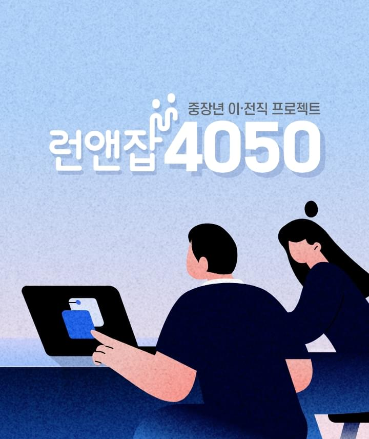
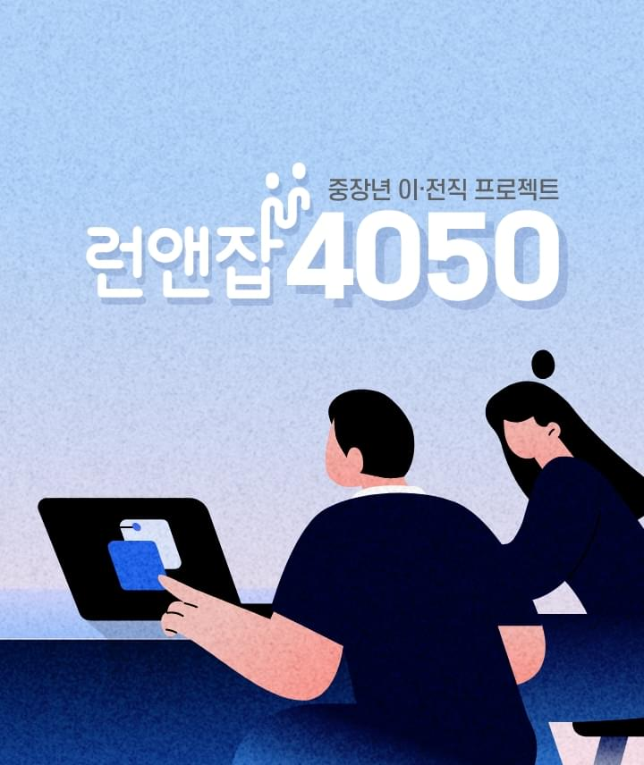

런앤잡4050은
중장년 집중지원 프로젝트 서울런4050 사업의 일환으로 서울시 거주 4050퇴직(예정)자들이
더 나은 일을 더 오래 할 수 있도록, 채용기업 발굴부터 중장년 채용수요 맞춤 교육과정 개발과 운영,
교육 후 일자리 매칭까지 원스톱으로 재취업을 지원하는 서울시 핵심 중장년 일자리지원 프로그램입니다.
특히 직무역량강화를 위해 마케팅 / 영업 / 인사 / 신사업기획 / 재무회계 5개 직무분야 별 실무역량강화 교육과 기본 소양교육 취업지원을 위한 취업역량 교육을 무료로 제공하고 컨설턴트 1:1 상담을 통한 일자리 매칭하는 사업입니다.
HISTORY
런앤잡4050은
지속해서 나아갑니다.
서울시 거주 4050세대에 대한 종합지원대책의 일환으로 서울상공회의소지역 인재개발위원회와 서울시50플러스재단이 주관하여 (주)상상우리가 운영하는 런앤잡4050은 2023년 6월부터 10월말까지 7개 차수(30명 내외/1차시) 200명을 교육시키고 일자리를 연계하는 시범사업으로 2024년부터는 정식사업으로 진행할 예정입니다.
TARGET
런앤잡4050은
명확한 목표를 가지고 있습니다.

런애잡4050은 2023년 200명을 교육하여, 100명의 중장년을 일자리 연계하고자 하는 명확한 목표를 가지고 있습니다.
RIVEIW
런앤잡4050의
멋진 경험을 확인하세요.
1. 런앤잡 450 1차 마케팅 과정
4050중장년들에게 실무 역량을 키우고 취업에 대한 자신감과 새로운 도전을 위한 좋은 교육 프로그램이라 생각합니다. 특히 중장년들이 기업의 실제 문제를 해결하기 위한 '프로젝트 챌린지'를 2~5회 진행하면서 팀원과의 효율적인 협동과 커뮤니케이션 스킬향상에 많은 도움이 되었습니다.
그동안 나이에 대한 부담감으로 취업준비시 스스로 위축되었으나 교육을 통해 자신감 향상과 MZ세대와의 소통 그리고 관리자로 오랜기간 근무하였기에 실무능력이 떨어졌던 부분에 대해 실무 업무 지식 향상을 통해 많은 도움이 되었습니다.
2. 런앤잡 4050 2차 재무회계 과정
과정의 특성이 재무회계이다 보니 교육과정의 난이도가 있었지만 구성과 실무 스킬을 쌓는데 도움이 되었고 특히 회계전산프로그램을 오랜만에 접하면서 예전 실무 노하우의 기억이 되살아 났습니다.
또한 취업역량 강화를 위한 모의면접과 핵심이력서 작성등을 통해 취업의 자신감을 얻었고 스스로 나아갈 방향에 대해 정립되기도 했습니다. 무엇보다 취업지원을 위한 컨설턴트의 상담을 통해 맞춤형 취업 정보제공이 앞으로의 취업 기대감이 크고 무엇보다 함께 참여한 중장년들과의 관계형성으로 많은 도움이 될 것 같습니다.
PROCESS
런앤잡4050의
진행 과정을 소개합니다.
-
기업발굴
#40대50대 채용
-
선발
#취업의지
#경험
-
교육
#마케팅 #재무회계 #영업유통
#신사업기획 #인사조직
-
취업지원
#양질의 일자리
-
후속지원
#적응
#네트워크
런애잡 4050은 중장년이 새로운 인생2막을 준비하기 위한 기본 소양교육을 통해 변화관리와 MZ와의 커뮤니케이션 방법과 실무능력 향상을 위한 직무 과정별(마케팅, 영업, 신사업기획, 인사조직, 재무회계) 교육과 취업을 위한 핵심역량강화교육, 취업을 돕는 취업컨설턴트와의 상담을 제공하여, 재취업 목표를 수립하고 전략을 실행할 수 있도록 구직활동을 지원하고 있습니다.
마케팅 직무 커리큘럼
| 구분 | 시간(H) | 주제 | 내용 | 방식 |
|---|---|---|---|---|
| 기본교육 (마인드셋, 디지털) |
3 | 변화관리 및 커뮤니케이션 | 변화와 수용과 미래 대비, MZ 그들은 누구인가, 세대통합 커뮤니케이션, 업무 소통 | 강의 및 실습 |
| 3 | 디지털 리터러시 | 생산성 향상 툴 이해, 생성 AI, 온라인 미팅 툴, 드롭박스, 에버노트 | 강의 및 실습 | |
| 직무역량교육 Project Challenge |
3 | SNS 마케팅 1, 인스타그램 | SNS 마케팅의 이해, 브랜드 마케팅 전략 매체로서의 인스타그램 인스타그램 콘텐츠 전략, 포스팅 콘텐츠 제작 및 실습, 인스타그램 브랜드 계정 실습 | 강의 및 실습 |
| 3 | 4050이력서 이해 및 채용공고 분석 | 핵심역량의 이해, 핵심역량이력서 작성법, 핵심역량이력서의 필요, 작성 실습, 채용공고 분석, 채용공고의 이해, 직무기술서 사례 분석 | 강의 및 실습 | |
| 3 | 퍼포먼스 마케팅2, 페이스북 광고 | 페이스북 관고 시스템 구조와 머신 러닝 이해, 픽셀을 통한 고객 모수 수집 픽셀 생성 실습, 캠페인 구조 이해 및 설정, 실습, 광고 리포트 맞춤 설정 분석 | 강의 및 실습 | |
| 3 | Project Challenge | 팀 구성, 주제 선정, 기획안 아이디어 구성 주제 이해 및 배경 조사, 문제 정의 | 팀별 실습 | |
| 3 | 퍼포먼스 마케팅1, 페이스북 광고 | Why 네이버?, 고객 구매 여정 및 마케팅 세그먼트에 따른 네이버 광고 전략, 광고 시스템별 특성과 구조, 광고 카피 작성 기초, 광고 리포트 생성 및 이해, 실습 | 강의 및 실습 | |
| 3 | SNS 마케팅 3, 블로그 마케팅 | 브랜드 마케팅 주요 매체로서의 블로그, 블로그 최신 트랜드, 상위노출 전략, 키워드 전략 및 키워드 실습, 블로그 포스팅 실습 및 개별 컨설팅 | 강의 및 실습 | |
| 3 | 구글 애널리틱스 1, 분석툴 이해 | 구글 애널리틱스 작동 원리와 구조, 구글 애널리틱스 스크립트와 UTM코드, 구글 애널리틱스 기본 보고서 의미와 이해, 생성형 보고서 만들어보기 | 강의 및 실습 | |
| 3 | 구글 애널리틱스 2, 데이터분석 사례와 실습 | 어떤 데이터를 볼 것인가? 네이버 데이터랩, 구글 트랜드 활용, 마케팅 데이터 연결 구조, 데이터에서 인사이트 도출 사례 분석, 데이터 분석 실습 | 강의 및 실습 | |
| 3 | Project Challenge | 솔루션 도출 발표 자료 작성 | 팀별 실습 | |
| 취업 심화교육 (자기표현) |
3 | 모의 면접 및 수료식 | 모의 면접 | 팀별 실습 |
마케팅 직무 커리큘럼
기본교육 (마인드셋, 디지털)
- 주제
- 변화관리 및 커뮤니케이션
- 시간(H)
- 3
- 방식
- 강의 및 실습
- 내용
- 변화와 수용과 미래 대비, MZ 그들은 누구인가, 세대통합 커뮤니케이션, 업무 소통
- 주제
- 디지털 리터러시
- 시간(H)
- 3
- 방식
- 강의 및 실습
- 내용
- 생산성 향상 툴 이해, 생성 AI, 온라인 미팅 툴, 드롭박스, 에버노트
직무역량교육 Project Challenge
- 주제
- SNS 마케팅 1, 인스타그램
- 시간(H)
- 3
- 방식
- 강의 및 실습
- 내용
- SNS 마케팅의 이해, 브랜드 마케팅 전략 매체로서의 인스타그램, 인스타그램 콘텐츠 전략, 포스팅 콘텐츠 제작 및 실습, 인스타그램 브랜드 계정 실습
- 주제
- 4050이력서 이해 및 채용공고 분석
- 시간(H)
- 3
- 방식
- 강의 및 실습
- 내용
- 핵심역량의 이해, 핵심역량이력서 작성법, 핵심역량이력서의 필요, 작성 실습, 채용공고 분석, 채용공고의 이해, 직무기술서 사례 분석
- 주제
- 퍼포먼스 마케팅2, 페이스북 광고
- 시간(H)
- 3
- 방식
- 강의 및 실습
- 내용
- 페이스북 관고 시스템 구조와 머신 러닝 이해, 픽셀을 통한 고객 모수 수집 픽셀 생성 실습, 캠페인 구조 이해 및 설정, 실습, 광고 리포트 맞춤 설정 분석
- 주제
- Project Challenge
- 시간(H)
- 3
- 방식
- 팀별 실습
- 내용
- 팀 구성, 주제 선정, 기획안 아이디어 구성, 주제 이해 및 배경 조사, 문제 정의
- 주제
- 퍼포먼스 마케팅1, 페이스북 광고
- 시간(H)
- 3
- 방식
- 강의 및 실습
- 내용
- Why 네이버?, 고객 구매 여정 및 마케팅 세그먼트에 따른 네이버 광고 전략, 광고 시스템별 특성과 구조, 광고 카피 작성 기초, 광고 리포트 생성 및 이해, 실습
- 주제
- SNS 마케팅 3, 블로그 마케팅
- 시간(H)
- 3
- 방식
- 강의 및 실습
- 내용
- 브랜드 마케팅 주요 매체로서의 블로그, 블로그 최신 트랜드, 상위노출 전략, 키워드 전략 및 키워드 실습, 블로그 포스팅 실습 및 개별 컨설팅
- 주제
- 구글 애널리틱스 1, 분석툴 이해
- 시간(H)
- 3
- 방식
- 강의 및 실습
- 내용
- 구글 애널리틱스 작동 원리와 구조, 구글 애널리틱스 스크립트와 UTM코드, 구글 애널리틱스 기본 보고서 의미와 이해, 생성형 보고서 만들어보기
- 주제
- 구글 애널리틱스 2, 데이터분석 사례와 실습
- 시간(H)
- 3
- 방식
- 강의 및 실습
- 내용
- 어떤 데이터를 볼 것인가? 네이버 데이터랩, 구글 트랜드 활용, 마케팅 데이터 연결 구조, 데이터에서 인사이트 도출 사례 분석, 데이터 분석 실습
- 주제
- Project Challenge
- 시간(H)
- 2
- 방식
- 팀별 실습
- 내용
- 팀 구성, 주제 선정, 기획안 아이디어 구성, 주제 이해 및 배경 조사, 문제 정의
취업 심화교육 (자기표현)
- 주제
- 모의 면접 및 수료식
- 시간(H)
- 3
- 방식
- 강의 및 실습
- 내용
- 모의 면접
재무회계 직무 커리큘럼
| 구분 | 주제 | 내용 | 방식 |
|---|---|---|---|
| 기본교육 (마인드셋, 디지털) |
변화관리 및 커뮤니케이션 | 변화와 수용과 미래 대비, MZ 그들은 누구인가, 세대통합 커뮤니케이션, 업무 소통 | 강의 및 실습 |
| 디지털 리터러시 | 생산성 향상 툴 이해, 생성 AI, 온라인 미팅 툴, 드롭박스, 에버노트 | 강의 및 실습 | |
| 직무역량교육 Project Challenge |
회계와 재무제표의 이해 | 회계란, 재무제표종류, 거래에서 재무제표 작성까지, 증빙(정규증명서류) 관리 | 강의 및 실습 |
| 자산과 부채 및 자본 회계처리 | 통장관리, 매입에 따른 재고자산과 매출채권 회계처리, 고정자산관리와 감가상각회계처리, 매출세액과 매입세액 회계처리와 부가가치세 등 | 강의 및 실습 | |
| 수익과 비용 회계처리 | 매출에 따른 수익 회계처리, 인건비(급여) 및 판매비와 관리비 회계처리, 영업외 수익과 영업외비용 회계처리 | 강의 및 실습 | |
| Project Challenge | 팀 구성, 주제 선정, 기획안 아이디어 구성 주제 이해 및 배경 조사, 문제 정의 | 선배와의 대화 | |
| 외부회계감사대상 중소기업 | 회계감사의 목적과 관련 법령, 중소기업외부회계감사 대상 요건 및 감사항목, 감사실무 사례 및 감사 준비 서류, 감사보고서의 이해(감사보고서사례분석) | 강의 및 실습 | |
| 결산관리와 재무제표 작성 | 결산수정분개(수익/비용 결산, 자산/부채 결산), 합계잔액시산표, 재무제표 작성 | 강의 및 실습 | |
| 전산프로그램을 통한 부가세 신고자료 및 재무제표 작성 | 더존 Smart A 프로그램을 이용한 거래에서 재푸제표 작성 및 부가세 실무, 뉴젠솔루션의 케이렙(세무사랑프로)과 영림원소프트랩 SystemEver(ERP프로그램)데모 | 강의 및 실습 | |
| 전산프로그램 실습 | 전산프로그램 실습 | 강의 및 실습 | |
| 취업 심화교육 (자기표현) |
4050 이력서 이해 및 작성법 | 핵심역량의 이해, 핵심역량이력서 작성법, 핵심역량이력서의 필요, 작성 실습 | 강의 및 실습 |
| 채용공고 분석 및 수료식 | 채용공고의 이해, 직무기술서 사례 분석, 채용공고 분석 시트 작성 | 강의 및 실습 |